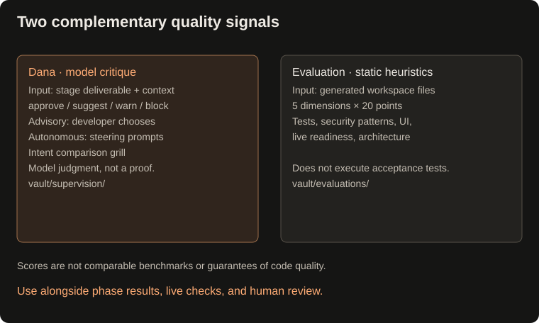

Supervision & evaluation
Quality supervision and evaluation
Dana quality supervision
- Evaluates deliverables across every stage (Natasha intent brief, Odin research report, Taghi architecture spec, Meti container deliverable) against 5 core criteria: schema completeness, container isolation, offline determinism, user input ergonomics, and modular architecture.
- Advisory Mode (
--supervise advisoryor--dana): Presents a structured quality critique card with score, strengths, risks/gaps, and actionable recommendations. Allows you to[Enter]proceed,[a]apply recommendations to the lead for automatic revision,[s]skip, or[q]abort. - Autonomous Mode (
--supervise autonomous): Detects warnings or blocking gaps and autonomously steers the lead with corrective prompts without interrupting human flow. - Off Mode (default): Keeps execution lean and direct when supervision is not needed.
- Override Model: Configure Dana via
--model-danaorMODEL_DANAin.env.
Deliverable evaluation
- Evaluates completed deliverables across 5 engineering dimensions (up to 20 pts each, 100 max):
- Dimension 1: Test Integrity & Coverage: Uses file/text indicators for selected test/assertion/mock patterns; it does not execute tests or measure coverage. Flags hollow assertions like
assert True. - Dimension 2: Security & Sanitization: Looks for selected CSV/spreadsheet sanitization patterns (
=,+,-,@), looks for selected secret-like literals and environment patterns; absence of a match does not establish safety. - Dimension 3: UI Surface & Usability: Looks for file/text indicators of user entry points (
form.html, responsive styling, field constraints, interactive CLI). - Dimension 4: Tier 2 Live Verification Readiness: Checks for dedicated smoke test scripts (
scripts/verify_live.py) decoupled from mock fixtures, plus actionable numbered checklists inREADME.md. - Dimension 5: Architectural Conformance & Hygiene: Looks for indicators of separation of concerns, living
PROJECT_PROFILE.mdmemory, and documentation.
- Dimension 1: Test Integrity & Coverage: Uses file/text indicators for selected test/assertion/mock patterns; it does not execute tests or measure coverage. Flags hollow assertions like
- CLI Command:
buildrelay --eval [project_id|task_id]orpython main.py --eval [project_id|task_id]. - Project REPL Command:
/evalinsidebuildrelay --session <project_id>. - Persistent Reports: Saves heuristic Markdown evaluation reports in
vault/evaluations/eval-<task_id>.md.


Dana receives stage deliverables and context; it is not a guaranteed full-file or diff review. Autonomous steering does not establish that every finding was repaired or independently re-reviewed. The evaluation harness uses file and text heuristics: its score is a diagnostic signal, not measured test coverage, a security audit, or a cross-project benchmark.